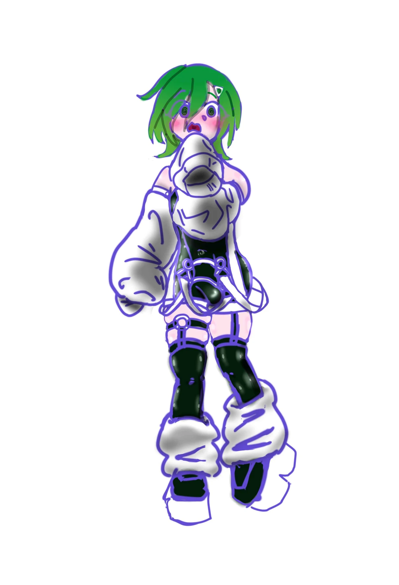
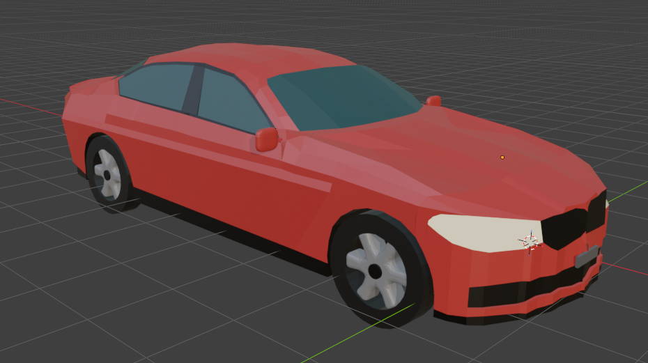
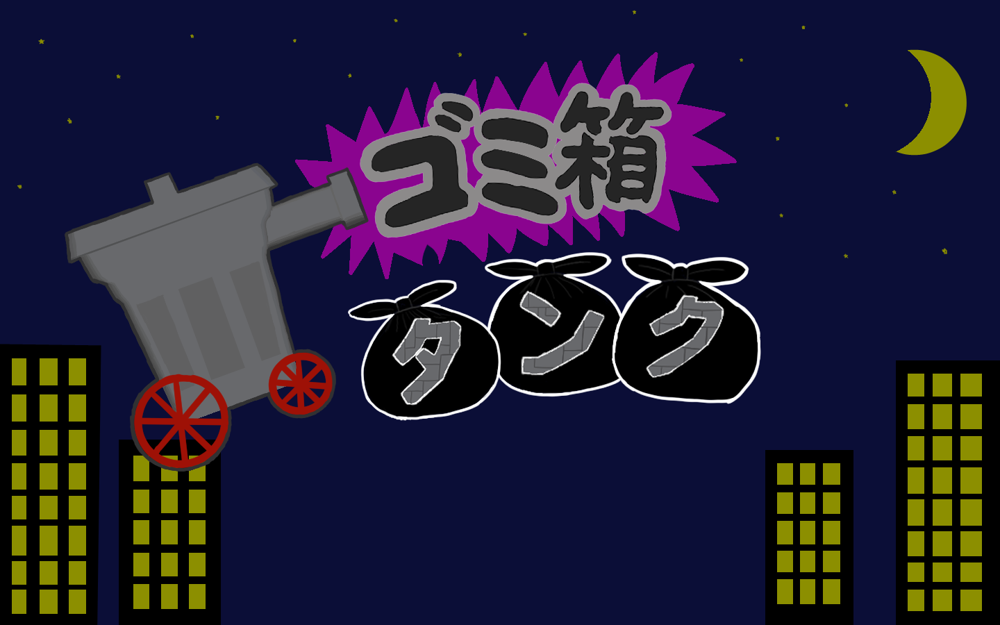
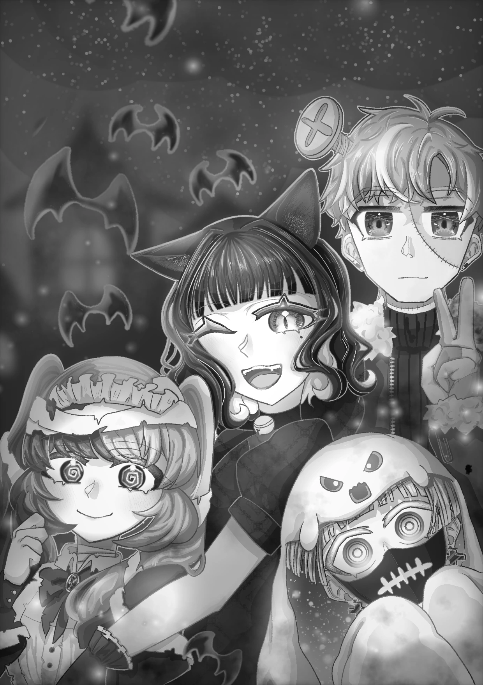
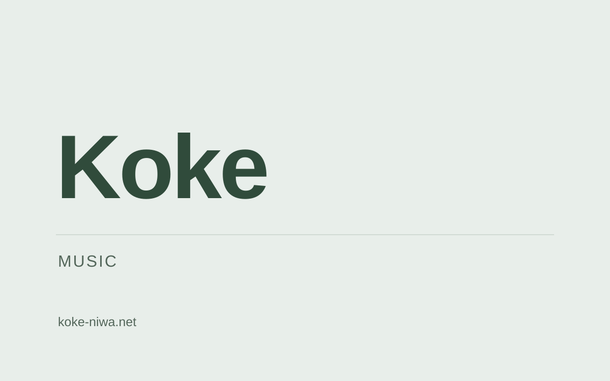
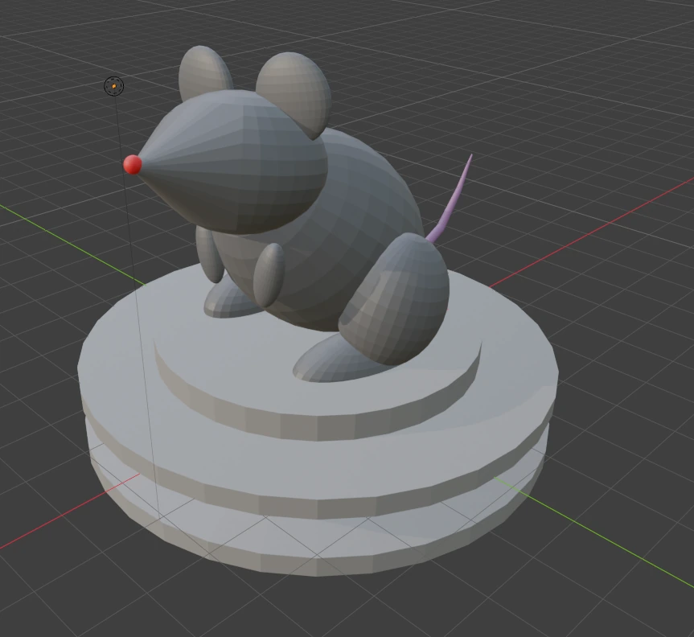

Games / Illustration / Live2D / 3D / Music作品を見る
CGPポートフォリオ
作品一覧

レゼリア
あるKu

VRMキャラクターモデル
42星（よつぼし）

Duellatro
やっさん / Otiai_cgp

テトライミング
Mackey / やっさん / みかんのへた

ARAIBA
れん

Runpage
topec

モアイおとし
topec

アモーレ！闘牛神
topec

Shake it Up!!
topec

キャラクターデザイン
あるKu

raythm 収録曲ジャケット
あるKu

イラストレーション集
あるKu

カフェインチャージ
やっさん
イラストレーション集
Otiai_cgp

キャラクターイラスト
かじの

3Dモデル作品集
みかんのへた

ゲーム用グラフィック
みかんのへた

ゲーム用グラフィック（夏チーム）
しの

イラストレーション集
しの

楽曲作品集
Koke

3Dモデル作品集
Tsujino
作品紹介メンバー
raythm
紹介メンバーれん

レゼリア
紹介メンバーあるKu
動画：あるKu / 音声：VOICEVOX 四国めたん
← 作品一覧に戻るVRMキャラクターモデル
紹介メンバー42星（よつぼし）


二次創作 / ピンク髪：AI不使用 / 紫髪：AI使用
← 作品一覧に戻るDuellatro
制作メンバーやっさん / Otiai_cgp
テトライミング
制作メンバーMackey / やっさん / みかんのへた
ARAIBA
紹介メンバーれん
Runpage
紹介メンバーtopec
モアイおとし
紹介メンバーtopec
アモーレ！闘牛神
紹介メンバーtopec
Shake it Up!!
紹介メンバーtopec
キャラクターデザイン
紹介メンバーあるKu
raythm 収録曲ジャケット
紹介メンバーあるKu
イラストレーション集
紹介メンバーあるKu


カフェインチャージ
紹介メンバーやっさん
イラストレーション集
紹介メンバーOtiai_cgp
キャラクターイラスト
紹介メンバーかじの
3Dモデル作品集
紹介メンバーみかんのへた
ゲーム用グラフィック
紹介メンバーみかんのへた
ゲーム用グラフィック（夏チーム）
制作メンバーしの
イラストレーション集
制作メンバーしの
楽曲作品集
制作メンバーKoke
3Dモデル作品集
制作メンバーTsujino